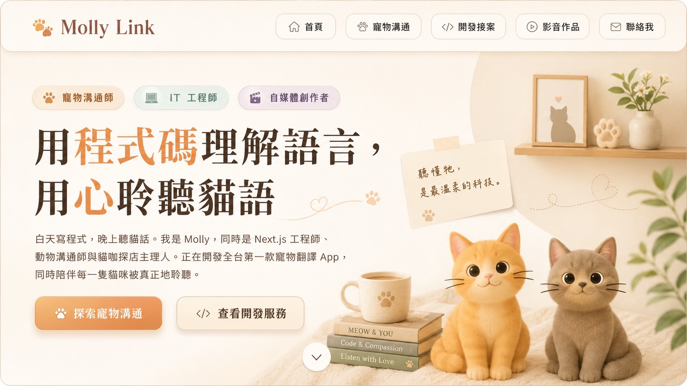

Mobile Preview
手機版介面也像一本溫柔的毛孩手帳。
行動版會保留 Molly Link 的暖色、貓咪角色與三重身分入口， 讓使用者在手機上也能快速理解服務、查看作品並送出合作邀約。
一屏掌握品牌定位
底部快速導覽
服務 CTA 更明確
Identity Tabs
三種能力，一個 Molly Link
溫暖的寵物溝通
用安靜而細膩的方式，聽見毛孩想說的話。
將動物溝通的直覺力轉化為清楚、可回顧的回饋，陪伴飼主理解毛孩的情緒、生活需求與關係訊息。
- 溝通前問題整理
- 毛孩狀態與感受回饋
- 90 天進階計畫紀錄
理性的產品開發
把靈感做成真的能上線、能被使用的網站與 App。
以 Next.js、Flutter 與 AI 自動化工具，把個人品牌、服務流程、內容工作流與寵物科技產品變成具體介面。
- 個人品牌網站與 Landing Page
- Flutter App MVP
- n8n / AI 工作流導入
活潑的影音創作
把寵物、AI 與日常觀察，剪成讓人想看下去的故事。
從腳本、拍攝到剪輯，將貓咖探店、養貓知識與工具分享做成適合 Reels、Shorts、TikTok 的短影音內容。
- DJI Pocket 3 拍攝
- CapCut 剪輯節奏
- 社群短影音企劃
Services
可以找 Molly 合作的事
Selected Work
作品與計畫中的宇宙
Pet Communication
聽懂你家毛孩的話
目前進行中：90 天動物溝通師進階計畫
深化遠距溝通能力、跨物種感知訓練，建構動物身心靈整體評估框架。 Molly 用工程師的記錄習慣，把直覺感知整理成更清楚、可回顧的回饋。
遠距動物溝通
線上圖文報告，回答 3 個問題，適合想理解毛孩情緒、習慣與需求的飼主。
NT$1,500 / 次到府現場溝通
大台北地區現場溝通，包含環境觀察與生活調整建議。
NT$2,800 / 次彩虹橋溝通
陪伴寵物的最後旅程與道別，讓想念有一個被溫柔安放的位置。
NT$1,800 / 次Development
用程式碼打造你的數位宇宙
Next.js
Flutter
UI/UX Design
n8n / AI 工具
CapCut 剪輯
主力作品：寵物翻譯機 App
結合 AI 聲音分析與動物溝通師直覺，打造讓飼主更理解毛孩情緒的 Flutter 產品原型。
前往 App 介紹頁
Media
每一格都是貓語
100 間貓咖探店進度
已完成 28 / 100 間
前往探店計畫頁
About Molly
用科技放大理解，用內容傳遞溫度。
Molly Link 的多重身分看似橫跨感性與理性，其實都指向同一件事： 幫助人與毛孩、品牌與受眾、想法與產品之間建立更好的連結。
橘橘
優雅的橘貓，像品牌的情緒雷達，負責提醒我們把溫柔放進每個細節。
球球
短尾虎斑小導演，像品牌的靈感開關，負責把日常剪成有節奏的故事。
皮皮
活潑又敏銳的小隊員，像品牌的好奇心，負責把每個新點子都先玩出可能性。
貝貝
溫柔穩定的陪伴者，像品牌的安心感，負責提醒每個作品都要柔軟又可靠。
Work Together
把你的想法傳給 Molly，一起做成可愛又實用的作品。
不管你是想讓毛孩被聆聽、想打造品牌網站，還是需要一支有溫度的短影音，Molly 都在這裡。
FAQ
合作前你可能想知道
動物溝通師是迷信嗎？
我的工作建立在直覺感知與長期觀察之上，同時用工程師的系統性思維記錄與整理每次溝通。
接案專案通常需要多久？
短影音約 3 到 7 天，品牌網站約 2 到 4 週，App 開發會依功能複雜度另行評估。
橘橘與球球會出現在服務裡嗎？
會。橘橘負責溫柔校稿，球球負責節奏監督，牠們也是整個品牌最重要的靈魂元素。